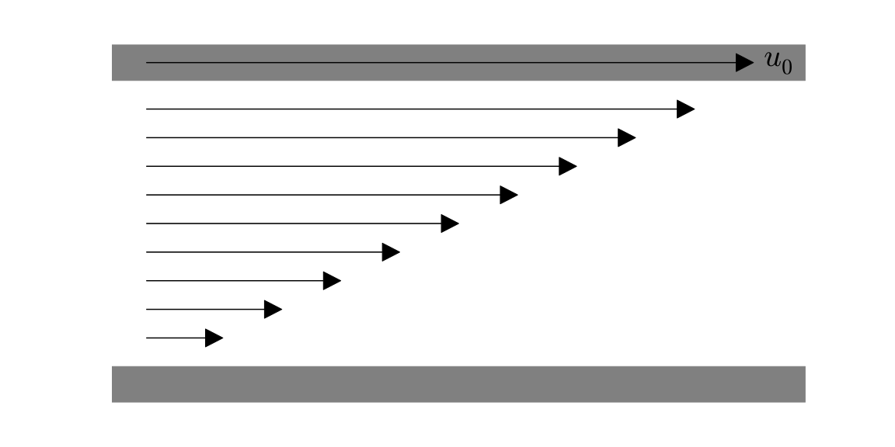

Nondimensional numbers and the Buckingham Pi theorem
Mon 21 September 2015
In my previous post I tried to establish the context for nondimensional analysis, which allowed us to ask the central questions that the Buckingham Pi theorem will allow us to answer. At the heart of the matter was the relationship between the units of the physical parameters which are important for a given problem, and the units of the quantity which we are trying to determine.
For the example of the period of the pendulum in a grandfather clock, we surmised that the important parameters were the length of the pendulum \(L\), the mass of the bob \(M\), and the acceleration due to gravity \(g\). When we tried to come up with something that matched the units of the period (seconds), we found that there was only one way to do that:
Since there was only one way to make something with the right units, we were pretty sure that the solution to this problem would look a lot like Equation \eqref{period}, and indeed that was correct, up to a factor of \(2 \pi\).
Couette flow
It is not always the case that there is only one way to make something of the correct units. In many more complicated problems there can be several ways to rearrange the parameters to get the units we want. A good example of this is Couette flow, which is among the simpler classical fluid dynamics problems, but still exhibits a huge amount of richness and complexity, and research on this style of flow is still being done.
In Couette flow there are two parallel plates with a fluid between them. The fluid has a viscosity \(\eta \; (\mathrm{kg}/\mathrm{m s})\) and a density \(\rho \; (\mathrm{kg}/\mathrm{m}^3)\), and the plates are separated by a distance \(D \; (\mathrm{m})\). The top plate is being moved in the \(x\)-direction at velocity \(u_0 \; (\mathrm{m/s})\). We presume that the plates are large enough laterally that we can neglect their edges.

We are interested in determining the velocity and pressure in the fluid, which means that, in general, you have to solve the Navier-Stokes equations for an incompressible fluid:
The Navier-Stokes equations are notoriously difficult to solve: there is a rather large prize available to anybody able to make some foundational progress towards a general solution. How much can we learn about this system from a dimensional standpoint?
Well, let's do the same accounting we did for the pendulum problem. We would like to know the velocity of the fluid between the plates, and the relevant parameters for the problem are the fluid viscosity \(\eta\), the fluid density \(\rho\), the distance between the two plates \(D\), and the velocity of the upper plate \(u_0\). which is driving the fluid flow. How can we use those to make something with units of velocity (\(\mathrm{m/s}\))?
You might think at first that this is easier than the pendulum problem. The driving velocity \(u_0\) has the right units, so we are already done! A closer look, though, reveals another way to make something of the right units:
There are, in fact, two different ways to represent the units of the velocity \(\mathbf{u}\). We can look at this system as having two different velocity "scales," of a sort. There is the scale which is determined by the driving velocity \(u_0\), but there is also the scale which is determined by the properties of the fluid and the geometry of the setup \(\eta/\rho D\). So which one is the correct scale? Which one is more appropriate for trying to learn about the velocity of the fluid?
The answer, you may not be surprised to learn, is that both are important. Moreover, the most useful way of looking at this problem is to compare the relative size of these two different fluid velocity scales. How the fluid behaves is determined by this comparison: if the driving velocity is much larger than the natural fluid velocity scale, the Couette flow will look very different than if the driving velocity is much smaller than the fluid velocity scale.
We can express this comparison mathematically by calculating the ratio of the two velocity scales. In fact, this ratio is so important for the Couette flow setup (and others like it) that it goes by a special name, the Reynolds number:
The Reynolds number has a nice physical interpretation: it represents the relative importance of the inertia of the fluid (which is driven by the wall motion, and tends to keep the fluid moving) and the viscous forces in the fluid (which tend to damp out fluid motions). If the Reynolds is large, inertia is more important, and the fluid will have whorls, vortices, and be very chaotic.
")
If the Reynolds number is small, the fluid will move slowly and regularly, in a fashion that is known as "laminar."
")
Nondimensional numbers
Something very important happened when we compared the two velocity scales by computing the Reynolds number: we divided something with units of velocity by something with units of velocity. By doing so we canceled out all the units in the number: we could compute the Reynolds number by measuring velocity in meters per second, we could compute it using feet per hour, we could compute it using light years per fortnight, and we would always come up with the same Reynolds number. And that Reynolds number will still have the physical interpretation of inertial-to-viscous effects.
Circling back to our initial goal of characterizing the velocity solution in terms of our parameters, we found that we can represent the units correctly by doing either of the following:
Unlike the pendulum example, there is an additional wrinkle. Sure, those expressions correctly represent the units of velocity, but we can multiply the right hand sides by the Reynolds number, which has no dimensions, and still get the correct units. Even more, we can multiply by any arbitrary function of the Reynolds number, and have no effect on the units.
Expressed in terms of an equation, we can write
Which expression is more correct? For the most part, it does not matter. It is not hard to show from the above equations that
so these two expressions are really just different ways of writing the same thing. And furthermore, that thing is not just a curiosity. We now know that every form of the solution for the velocity field \(\mathbf{u}\) can be written like Equation \ref{u_0_dimensions}, since that is the only way to make the units work out right. Therefore, every form of the solution must be expressible in terms of the Reynolds number.
The Reynolds number is, in a sense, the most natural way to describe Couette flow: it tells us something about the physics of the setup and it does not depend on the system of units that we have chosen for our measurements. Even better, now we know that the system is expressible using a single parameter (\(\mathrm{Re}\)), as opposed to the four parameters we started out with (\(\rho\), \(u_0\), \(D\), and \(\eta\)). That can potentially give us a huge savings of effort: instead of trying to understand how Couette flow works if we change around the four parameters, we now know that we only have to explore how things work if we change the Reynolds number.
It is beyond the scope of this article, but there is a large literature on Couette flow and how it behaves at different Reynolds numbers. At low \(\mathrm{Re}\) it is laminar, which is shown in the above schematic diagram. As \(\mathrm{Re}\) becomes larger, however, instabilities in the flow start to appear, causing complex and turbulent flow features.
The Buckingham Pi theorem
Let's try to put the observations we've made so far into a coherent picture. When working out the period of a pendulum, there was only one way to make something with the right units. However, when we tried a more complicated problem in Couette flow, which has more parameters in it, there were two ways to make something with the right units. This redundancy meant that we were able to construct a nondimensional number, and resulting solutions could include arbitrary functions of this nondimensional number.
It seems to be a general feature of dimensional analysis that as we add more parameters which are important to the problem, there start to be more ways that we can represent any given units. Furthermore, if we can represent a given unit in several ways, we should be able to construct several nondimensional numbers out of those ways, just as we did with the Reynolds number.
The Buckingham Pi theorem allows us to be quantitative about this observation: given a set of parameters, it tells you how many "ways" you can make a unit, and how many nondimensional numbers can be constructed out of those parameters.
The basic procedure for the Buckingham Pi theorem is as follows:
-
First, we count the number of fundamental units in the problem. These are units which are not built out of other units, things like mass: time, or length. Density would not qualify, as it is built out of mass and length units (\(\mathrm{kg}/\mathrm{m}^3\)). Call that number of fundamental units \(k\).
-
Second, we count the number of parameters in the problem. Call that number \(n\).
-
The number of nondimensional numbers is then given by \(p = n-k\). We can express any solution to the problem in terms of those \(p\) nondimensional numbers.
Let's apply this procedure two our two example problems:
The pendulum problem had the paramters \(L\) and \(g\), so \(n=2\). The fundamental units in the problem are length and time, so \(k=2\). Therefore, the number of nondimensional numbers is
Very complicated math. But it confirms what we found before, that there are no ways to make any nondimensional numbers, and therefore only one way to represent the units of the pendulum's period (the astute reader may wonder what would have happened if we included the mass of the bob in our parameter list, as we mistakenly did earlier: I hope to get to that later!).
The Couette flow problem had the parameters \(\eta\), \(\rho\), \(D\), and \(u_0\), so \(n=4\). The fundamental units in that problem were mass, time, and length, so \(k = 3\). Therefore we can calculate the number of nondimensional numbers as
Again, this is consistent with our discovery of a single nondimensional number: the Reynolds number.
You may notice that the description of the Buckingham Pi theorem above is essentially the same as the quote from the Wikipedia article in the previous post. Hopefully it should make more sense this time around. However, it still may not be clear why it is true. The answer is that the Buckingham Pi theorem is, at heart, an application of the most important result in linear algebra: the rank-nullity theorem. In my next post, I will revisit the theorem from that perspective.